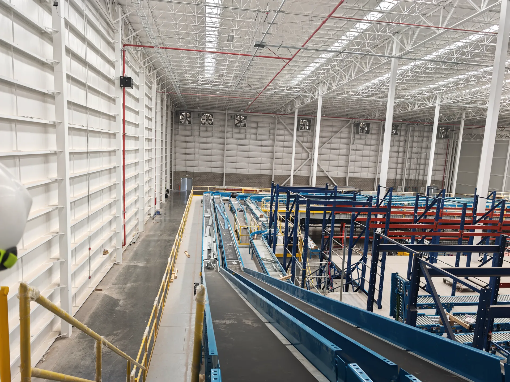
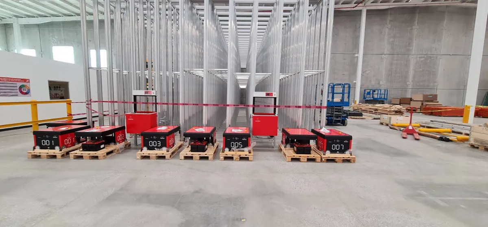
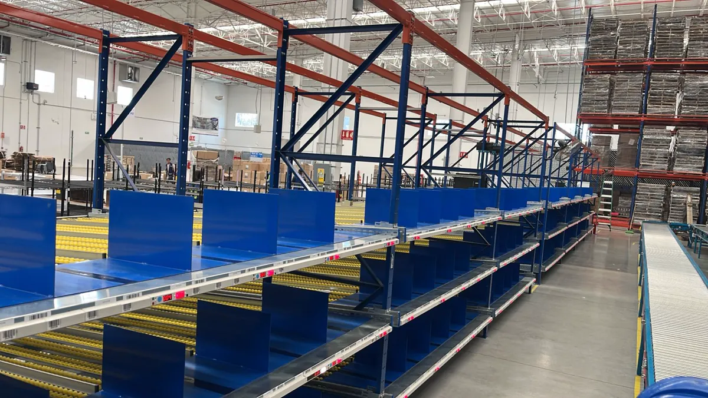
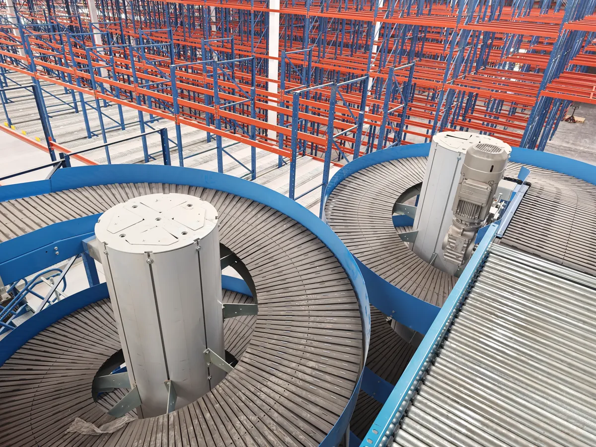
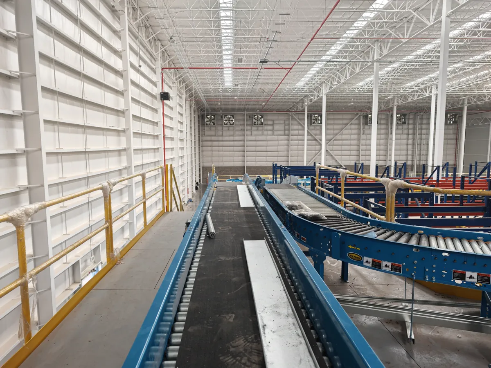
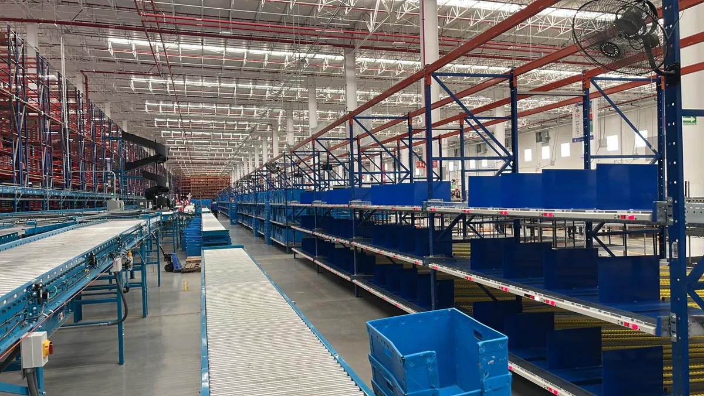
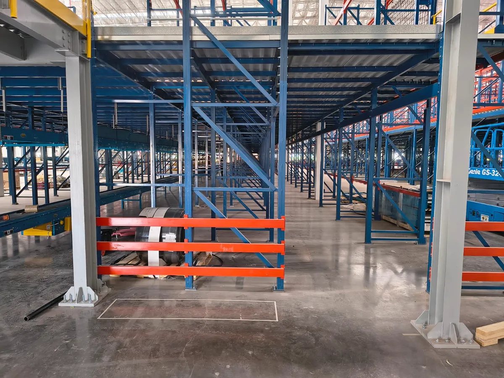

Instalación mecánica
Ensamble, montaje, nivelación, alineación, anclaje y ajustes de sistemas intralogísticos, conforme a planos y tolerancias del fabricante.
SOCIO DE EJECUCIÓN EN MÉXICO
Ejecución mecánica, eléctrica y de control para proyectos de automatización, como socio de confianza de integradores.

Menbax colabora con integradores nacionales e internacionales que necesitan capacidad especializada para ejecutar proyectos intralogísticos en México. Coordinamos personal técnico, instalación, seguridad, ingeniería de apoyo y supervisión para convertir un diseño en un sistema instalado y listo para sus siguientes etapas de integración.
Nos adaptamos al alcance de cada integrador: desde cuadrillas por especialidad hasta paquetes de instalación coordinados bajo una misma dirección de proyecto.
NUESTRAS CAPACIDADES
Un equipo de ejecución que entiende la tecnología, las condiciones de campo y los compromisos del proyecto.
Ensamble, montaje, nivelación, alineación, anclaje y ajustes de sistemas intralogísticos, conforme a planos y tolerancias del fabricante.
Canalizaciones, charolas, tableros, cableado de potencia y control, sensores, dispositivos de campo y verificación eléctrica.
Instalación e integración de componentes de control, pruebas punto a punto, soporte de I/O y acompañamiento durante commissioning según alcance.
Revisión de layouts, ingeniería de instalación, coordinación de interfaces técnicas y documentación de campo o as-built cuando se requiera.
Planeación, programación, movilización, coordinación de cuadrillas y proveedores, reportes de avance, calidad y seguridad en obra.
TECNOLOGÍAS
Capacidad para trabajar bajo las especificaciones y procedimientos del proveedor tecnológico.

ALMACENAMIENTO ROBOTIZADOSoporte para montaje de estructuras grid, puertos e infraestructura asociada, conforme al alcance del integrador.

CLASIFICACIÓN ROBÓTICAEnsamble de módulos, estructura, pistas, superficies de circulación, chutes y alineación de componentes.

TRANSPORTE AUTOMATIZADOLíneas rectas y curvas, elevación, espirales, merges, divisores y equipos de clasificación, con soporte eléctrico y neumático.
Las referencias tecnológicas describen especialidades de instalación. Menbax no se presenta como fabricante ni como distribuidor oficial de estas marcas.
CÓMO TRABAJAMOS
Colaboramos con el integrador respetando su liderazgo tecnológico, sus planos, sus estándares y sus criterios de aceptación.
Revisamos planos, listas de equipos, interfaces, responsabilidades y condiciones de instalación.
Coordinamos cuadrillas, recursos, seguridad, suministros y programa de trabajo en sitio.
Ejecutamos el montaje, documentamos avances y apoyamos las pruebas y la entrega según contrato.



HABLEMOS DE TU PROYECTO
Compártenos el tipo de sistema, ubicación, calendario preliminar y alcance de instalación. Podemos revisar la mejor forma de colaborar.